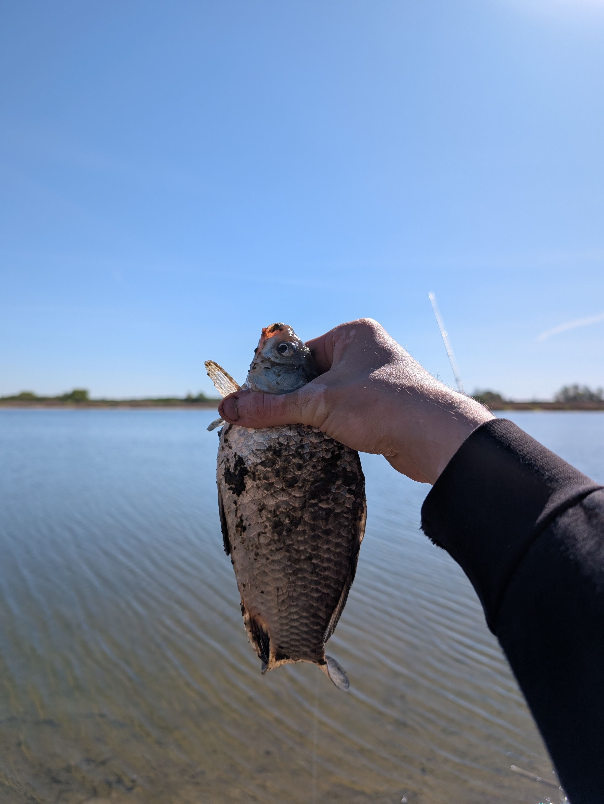
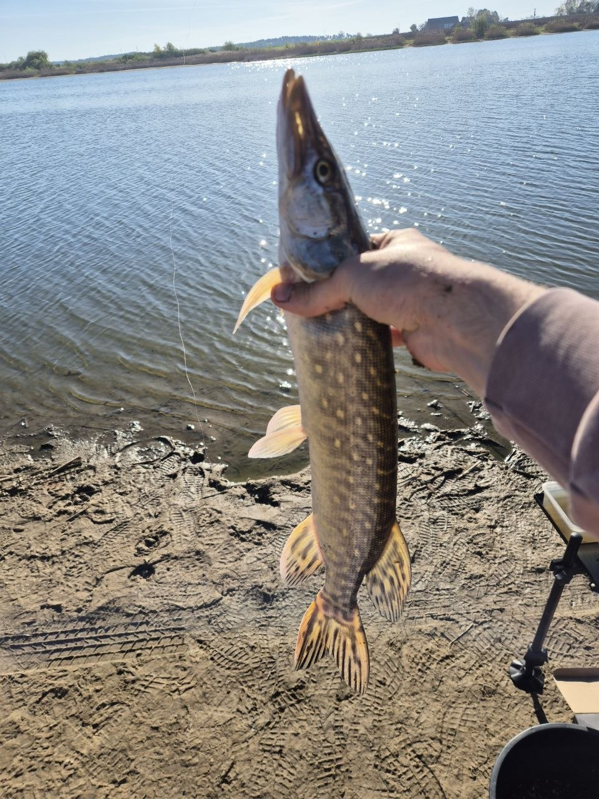

Moja Ostatnia Wyprawa Nad Wodą
Wspólny poranek nad Jeziorem Jaraczewo
Moją ostatnią wędkarską wyprawę zaplanowałem z kumplem nad malowniczym jeziorem Jaraczewo w Wielkopolsce.
Tego dnia obaj postawiliśmy na feedera. Ryby współpracowały znakomicie, choć trzeba przyznać, że to kumpel miał tego dnia prawdziwy "dzień konia"! Przez sześć godzin łowienia (skończyliśmy o 13:00) udało mi się wyciągnąć 7 ładnych karasi, z których i tak byłem bardzo zadowolony. Mój kolega natomiast rozbił bank – na jego koncie wylądowało ponad 20 sztuk!
Prawdziwą wisienką na torcie i największą niespodzianką tego wyjazdu był jednak przyłów. Na zestaw feederowy kolegi nagle zameldował się... szczupak! To tylko udowadnia, że wędkarstwo zawsze potrafi nas zaskoczyć. Zasiadkę zakończyliśmy w świetnych humorach, z gotowymi planami na kolejny wyjazd.
Szybkie podsumowanie:
- Moje wyniki: 7 pięknych karasi
- Wyniki kumpla: Ponad 20 karasi i szczupak (na feedera!)



Powrót do głównej strony